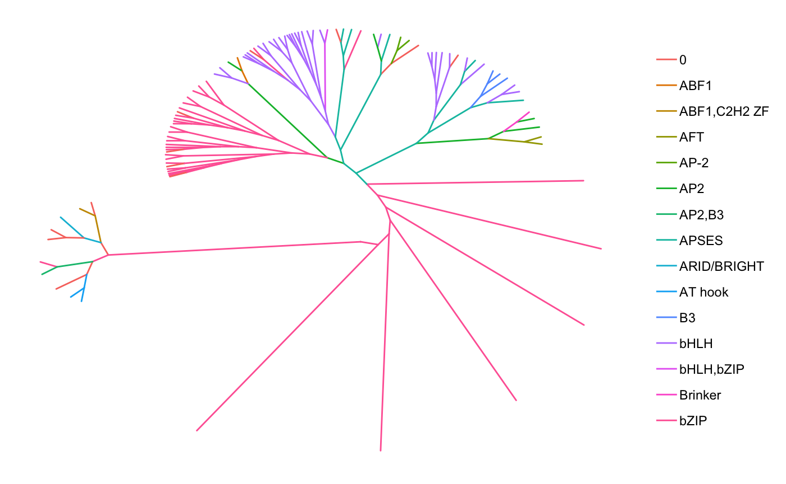

R/vignettes/AdvancedUsage.Rmd
AdvancedUsage.RmdAbstract
Introducing sequence motif types.Though PCM/PPM/PWM/ICM type motifs are still widely used today, a few ‘next generation’ motif formats have been proposed. These wish to add another layer of information to motifs: nucleotide interdependence. To illustrate this, consider the following sequences:
| # | Sequence |
|---|---|
| 1 | CAAAACC |
| 2 | CAAAACC |
| 3 | CAAAACC |
| 4 | CTTTTCC |
| 5 | CTTTTCC |
| 6 | CTTTTCC |
This becomes the following PPM:
| Position | 1 | 2 | 3 | 4 | 5 | 6 | 7 |
|---|---|---|---|---|---|---|---|
| A | 0.0 | 0.5 | 0.5 | 0.5 | 0.5 | 0.0 | 0.0 |
| C | 1.0 | 0.0 | 0.0 | 0.0 | 0.0 | 1.0 | 1.0 |
| G | 0.0 | 0.0 | 0.0 | 0.0 | 0.0 | 0.0 | 0.0 |
| T | 0.0 | 0.5 | 0.5 | 0.5 | 0.5 | 0.0 | 0.0 |
Based on the PPM representation, all three of CAAAACC, CTTTTCC, and CTATACC are equally likely. Though looking at the starting sequences, should CTATACC really be considered so? For transcription factor binding sites, generally the answer is no. By incorporating this type of information into the motif, this can allow for increased accuracy in motif searching. A few implementations of this include: TFFM by Mathelier and Wasserman (2013), BaMM by Siebert and Soding (2016), and KSM by Guo et al. (2018).
The universalmotif package implements its’ own, much simplified, version of this concept. Plainly, the standard PPM has been extended to include k-letter frequencies, with k being any number higher than 1. For example, the 2-letter version of the table @ref(tab:ppm2) motif would be:
| Position | 1 | 2 | 3 | 4 | 5 | 6 |
|---|---|---|---|---|---|---|
| AA | 0.0 | 0.5 | 0.5 | 0.5 | 0.0 | 0.0 |
| AC | 0.0 | 0.0 | 0.0 | 0.0 | 0.5 | 0.0 |
| AG | 0.0 | 0.0 | 0.0 | 0.0 | 0.0 | 0.0 |
| AT | 0.0 | 0.0 | 0.0 | 0.0 | 0.0 | 0.0 |
| CA | 0.5 | 0.0 | 0.0 | 0.0 | 0.0 | 0.0 |
| CC | 0.0 | 0.0 | 0.0 | 0.0 | 0.0 | 1.0 |
| CG | 0.0 | 0.0 | 0.0 | 0.0 | 0.0 | 0.0 |
| CT | 0.5 | 0.0 | 0.0 | 0.0 | 0.0 | 0.0 |
| GA | 0.0 | 0.0 | 0.0 | 0.0 | 0.0 | 0.0 |
| GC | 0.0 | 0.0 | 0.0 | 0.0 | 0.0 | 0.0 |
| GG | 0.0 | 0.0 | 0.0 | 0.0 | 0.0 | 0.0 |
| GT | 0.0 | 0.0 | 0.0 | 0.0 | 0.0 | 0.0 |
| TA | 0.0 | 0.0 | 0.0 | 0.0 | 0.0 | 0.0 |
| TC | 0.0 | 0.0 | 0.0 | 0.0 | 0.5 | 0.0 |
| TG | 0.0 | 0.0 | 0.0 | 0.0 | 0.0 | 0.0 |
| TT | 0.0 | 0.5 | 0.5 | 0.5 | 0.0 | 0.0 |
This format shows the probability of each letter combined with the probability of the letter in the next position. The seventh column has been dropped, since it is not needed; the information in the sixth column is sufficient, and there is no eighth position to draw 2-letter probabilities from. Now, the probability of getting CTATACC is no longer equal to CTTTTCC and CAAAACC. This information is kept in the multifreq slot of universalmotif class motifs. To add this information, use the add_multifreq function.
motif <- create_motif("CWWWWCC", nsites = 6) ## -> see next section
sequences <- Biostrings::DNAStringSet(rep(c("CAAAACC", "CTTTTCC"), 3))
motif.k2 <- add_multifreq(motif, sequences, add.k = 2)
motif.k2
#>
#> Motif name: motif
#> Alphabet: DNA
#> Type: PPM
#> Strands: +-
#> Total IC: 10
#> Consensus: CWWWWCC
#> Target sites: 6
#> k-letter freqs: 2
#>
#> C W W W W C C
#> A 0 0.5 0.5 0.5 0.5 0 0
#> C 1 0.0 0.0 0.0 0.0 1 1
#> G 0 0.0 0.0 0.0 0.0 0 0
#> T 0 0.5 0.5 0.5 0.5 0 0Additionally, this package introduces the motif_tree function for generating basic tree-like diagrams for comparing motifs.
# library(MotifDb)
## motif_tree is much simpler, but also much faster and allows for
## bigger trees; done via the ggtree package
motif_tree(MotifDb[301:400], layout = "daylight", linecol = "family")
#> Comparing motifs...
#> 0% 2% 3% 4% 5% 6% 7% 8% 9% 10% 11% 12% 13% 14% 15% 16% 17% 18% 19% 20% 21% 22% 23% 24% 25% 26% 27% 28% 29% 30% 31% 32% 33% 34% 35% 36% 37% 38% 39% 40% 41% 42% 43% 44% 45% 46% 47% 48% 49% 50% 51% 52% 53% 54% 55% 56% 57% 58% 59% 60% 61% 62% 63% 64% 65% 66% 67% 68% 69% 70% 71% 72% 73% 74% 75% 76% 77% 78% 79% 80% 81% 82% 83% 84% 85% 86% 87% 88% 89% 90% 91% 92% 93% 94% 95% 96% 97% 98%100%
#> Average angle change [1] 0.080931235825627
#> Average angle change [2] 0.02439105682278
#> R version 3.5.1 (2018-07-02)
#> Platform: x86_64-apple-darwin15.6.0 (64-bit)
#> Running under: macOS High Sierra 10.13.4
#>
#> Matrix products: default
#> BLAS: /Library/Frameworks/R.framework/Versions/3.5/Resources/lib/libRblas.0.dylib
#> LAPACK: /Library/Frameworks/R.framework/Versions/3.5/Resources/lib/libRlapack.dylib
#>
#> locale:
#> [1] en_US.UTF-8/en_US.UTF-8/en_US.UTF-8/C/en_US.UTF-8/en_US.UTF-8
#>
#> attached base packages:
#> [1] stats4 parallel stats graphics grDevices utils datasets
#> [8] methods base
#>
#> other attached packages:
#> [1] bindrcpp_0.2.2 MotifDb_1.23.0 Biostrings_2.49.1
#> [4] XVector_0.21.3 IRanges_2.15.17 S4Vectors_0.19.19
#> [7] BiocGenerics_0.27.1 universalmotif_0.99.0 BiocStyle_2.9.6
#> [10] nvimcom_0.9-75
#>
#> loaded via a namespace (and not attached):
#> [1] Biobase_2.41.2 tidyr_0.8.1
#> [3] jsonlite_1.5 gtools_3.8.1
#> [5] Rdpack_0.9-1 assertthat_0.2.0
#> [7] BiocManager_1.30.2 rvcheck_0.1.0
#> [9] GenomeInfoDbData_1.1.0 Rsamtools_1.33.5
#> [11] yaml_2.2.0 pillar_1.3.0
#> [13] backports_1.1.2 lattice_0.20-35
#> [15] glue_1.3.0 digest_0.6.17
#> [17] GenomicRanges_1.33.13 colorspace_1.3-2
#> [19] Matrix_1.2-14 htmltools_0.3.6
#> [21] plyr_1.8.4 XML_3.98-1.16
#> [23] pkgconfig_2.0.2 bibtex_0.4.2
#> [25] ggseqlogo_0.1 bookdown_0.7
#> [27] zlibbioc_1.27.0 purrr_0.2.5
#> [29] tidytree_0.1.9 scales_1.0.0
#> [31] processx_3.2.0 BiocParallel_1.15.12
#> [33] tibble_1.4.2 ggplot2_3.0.0
#> [35] SummarizedExperiment_1.11.6 lazyeval_0.2.1
#> [37] splitstackshape_1.4.6 magrittr_1.5
#> [39] crayon_1.3.4 memoise_1.1.0
#> [41] evaluate_0.11 ps_1.1.0
#> [43] fs_1.2.6 nlme_3.1-137
#> [45] MASS_7.3-50 xml2_1.2.0
#> [47] data.table_1.11.4 tools_3.5.1
#> [49] matrixStats_0.54.0 gbRd_0.4-11
#> [51] stringr_1.3.1 ggtree_1.13.3
#> [53] munsell_0.5.0 DelayedArray_0.7.41
#> [55] compiler_3.5.1 pkgdown_1.1.0.9000
#> [57] GenomeInfoDb_1.17.1 rlang_0.2.2
#> [59] debugme_1.1.0 grid_3.5.1
#> [61] RCurl_1.95-4.11 labeling_0.3
#> [63] bitops_1.0-6 rmarkdown_1.10
#> [65] gtable_0.2.0 roxygen2_6.1.0
#> [67] R6_2.2.2 GenomicAlignments_1.17.3
#> [69] knitr_1.20 dplyr_0.7.6
#> [71] rtracklayer_1.41.5 bindr_0.1.1
#> [73] commonmark_1.6 rprojroot_1.3-2
#> [75] treeio_1.5.5 desc_1.2.0
#> [77] ape_5.1 stringi_1.2.4
#> [79] Rcpp_0.12.18 tidyselect_0.2.4
#> [81] xfun_0.3Guo, Y., K. Tian, H. Zeng, X. Guo, and D.K. Gifford. 2018. “A Novel K-Mer Set Memory (KSM) Motif Representation Improves Regulatory Variant Prediction.” Genome Research 28: 891–900.
Mathelier, A., and W.W. Wasserman. 2013. “The Next Generation of Transcription Factor Binding Site Prediction.” PLoS Computational Biology 9 (9): e1003214.
Siebert, M., and J. Soding. 2016. “Bayesian Markov Models Consistently Outperform PWMs at Predicting Motifs in Nucleotide Sequences.” Nucleic Acids Research 44 (13): 6055–69.